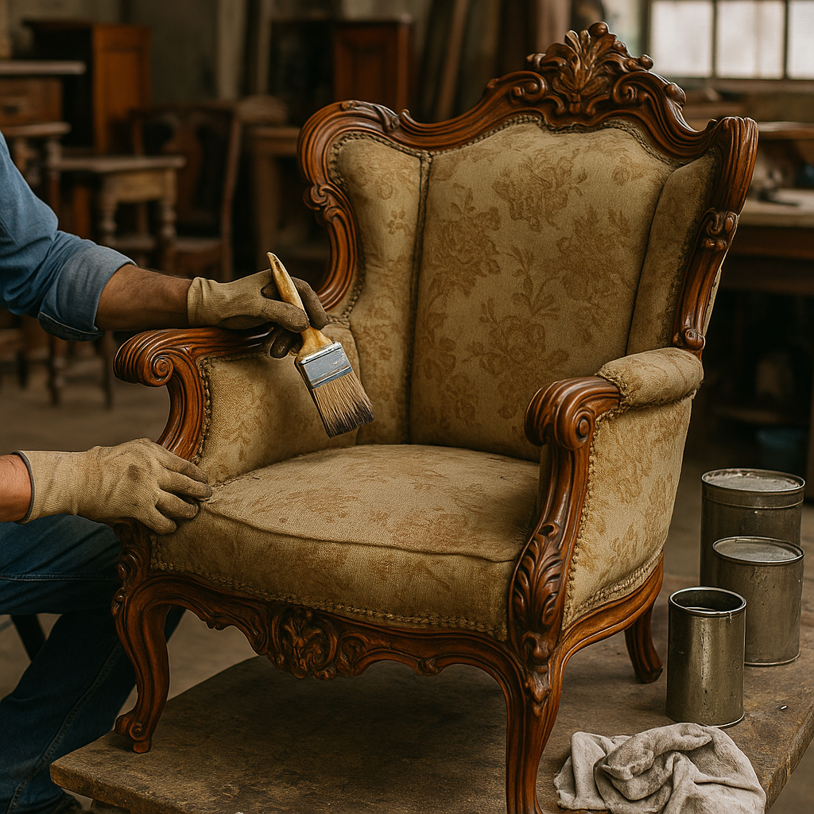
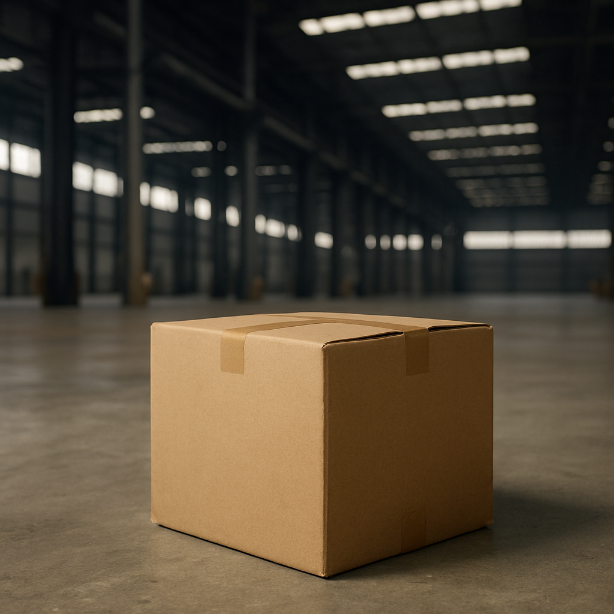

Depuis plus de 10 ans, notre boutique est spécialisée dans la rénovation d'antiquités rares et précieuses. Nos artisans experts redonnent vie à des objets anciens, en préservant leur authenticité tout en améliorant leur état. Nous proposons des services de restauration pour des meubles, des sculptures et des objets d'art provenant de diverses époques historiques.
Notre entreprise organise des expositions régulières dans diverses villes, mettant en valeur nos objets restaurés et nos pièces les plus rares. Ces événements sont une occasion unique pour les amateurs d'art et les collectionneurs de découvrir des antiquités en parfait état, tout en appréciant l'histoire et la beauté de chaque pièce. Nous avons participé à de nombreuses expositions à travers le monde.
Nous proposons une expédition mondiale pour nos clients, avec une option de livraison express en France. Que vous soyez en Europe, en Asie ou aux États-Unis, nous nous assurons que vos achats arrivent dans les meilleures conditions, en toute sécurité et dans les plus brefs délais. Pour nos clients français, nous offrons une option de livraison express pour garantir une réception rapide de vos articles.
